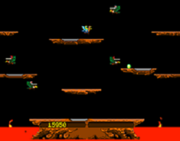

Portfolio
-
Joust Game
This fun little project was the final project for Object Oriented Development. I was the lead developer for motion controls and antagonist pseudo-intelligence. I assisted in gravity controls and collision effects as well.
-
Markup Portfolio

This is a piece of the process for creating this webpage. I learned much about layout and development for larger websites through this activity that can be employed on any and all future projects.